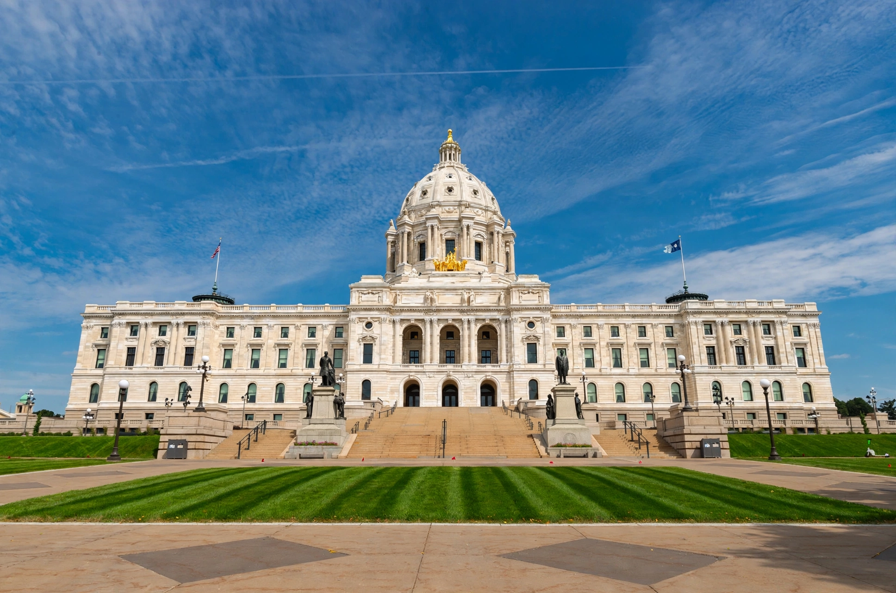

The Minnesota State Capitol is the seat of government of the US state of Minnesota, in St. Paul. Designed by architect Cass Gilbert and completed in 1905, the Beaux-Arts building is famed for its unsupported white marble dome — the second largest of its kind in the world after St Peter's Basilica — and for the gilded quadriga statue group The Progress of the State above its entrance.

| Location | 75 Rev. Dr. Martin Luther King Jr. Blvd., St. Paul, Minnesota |
|---|---|
| Architect | Cass Gilbert |
| Built | 1896–1905 |
| Style | Beaux-Arts / Renaissance Revival |
The current building is Minnesota's third capitol: the first burned in 1881 and its replacement outgrew the state's needs. Gilbert won the design competition in 1895; construction with Georgia white marble took nine years and cost about $4.5 million. The building houses the Senate, House of Representatives, governor's office and state supreme court.
The self-supporting marble dome rises 220 feet, modelled on St Peter's and Gilbert's reading of the US Capitol. Daniel Chester French's gilded quadriga — four horses representing nature's elements, charioted by Prosperity with figures for agriculture and industry — crowns the portico. Interiors feature murals by John La Farge, Kenyon Cox and others, grand staircases and a German-crafted Rathskeller café. Grounds include memorials to veterans and the pioneering Minnesota Woman Suffrage Memorial.
A comprehensive $310 million restoration (2013–2017) repaired the marble, modernised systems and restored public spaces, reopening to acclaim in 2017. The capitol is listed on the National Register of Historic Places. See Cass Gilbert and Saint Paul, Minnesota.